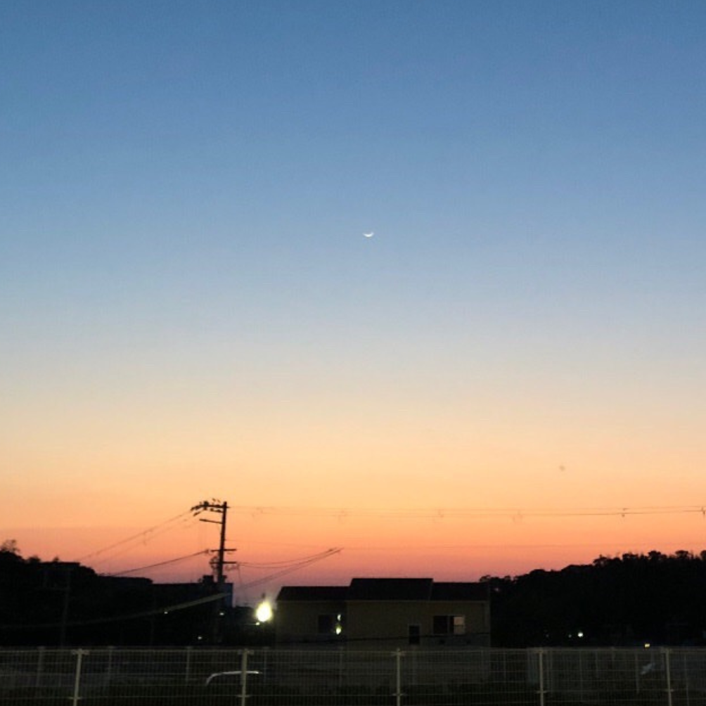
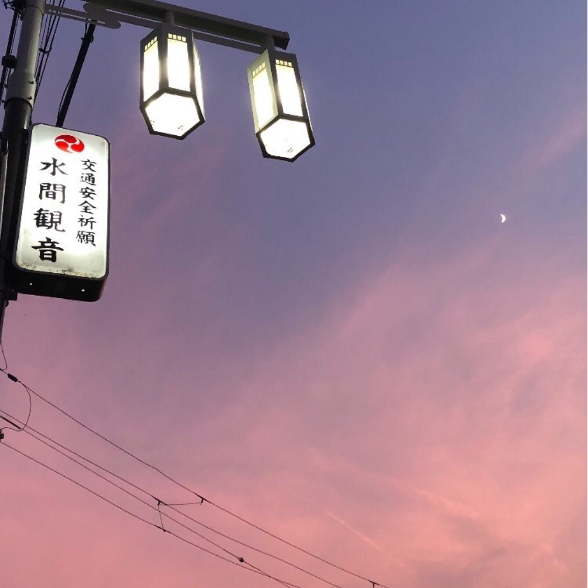
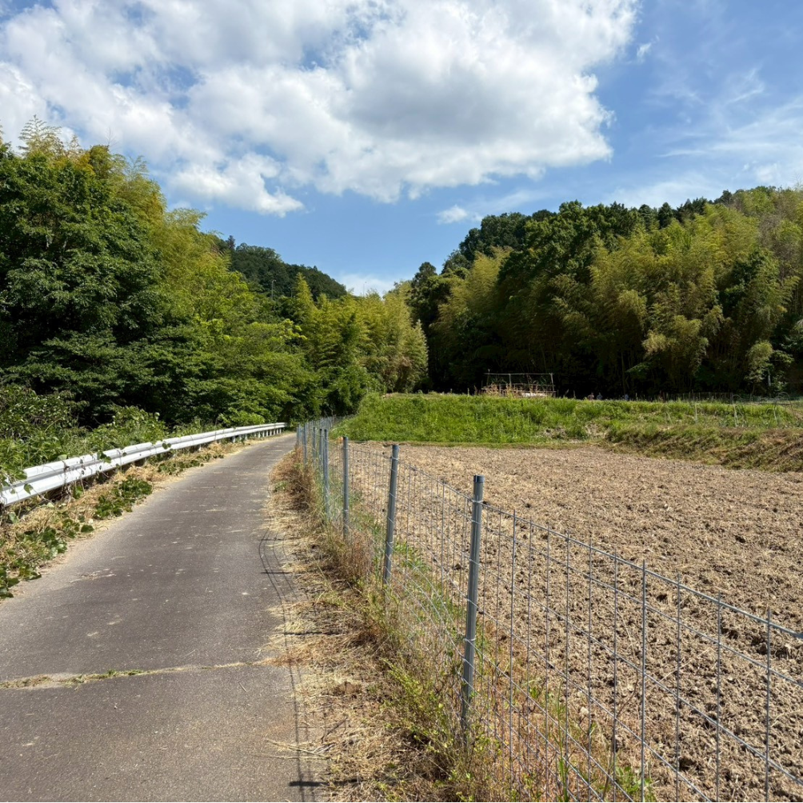
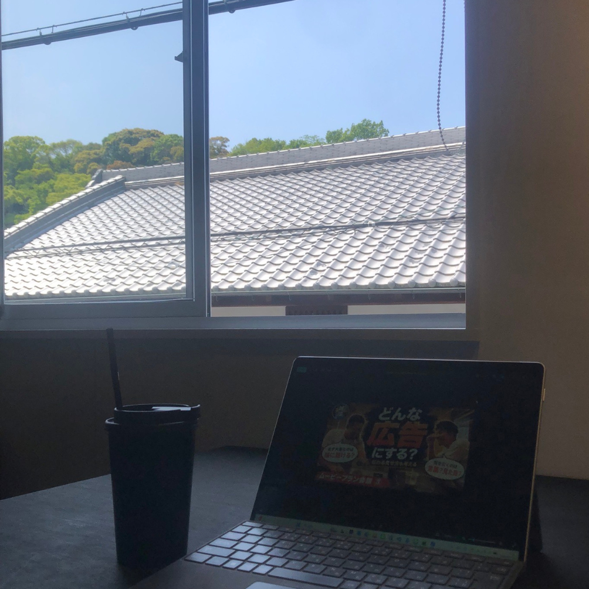
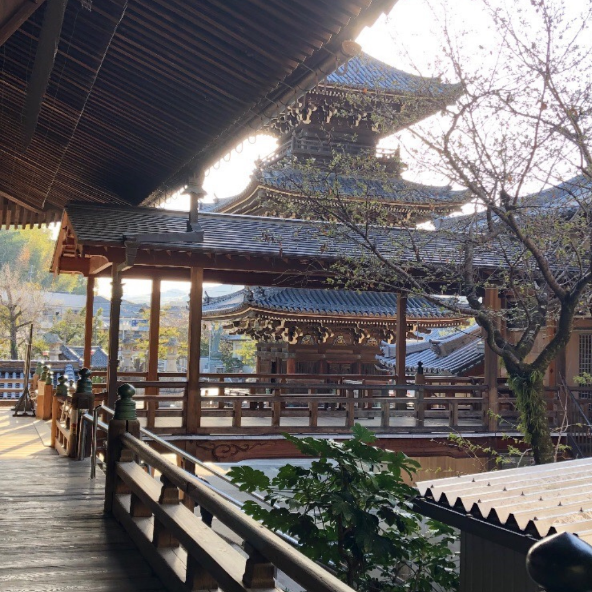

人力車 誠屋の2026年5月25日現在のリアル アイデアを形にする能力
アイデアを考えることと実行することの差、地域活性化で他者を巻き込みながら現実を少しずつ動かしていく難しさと現在地を整理した記録です。
Articles
水間門前町や貝塚で、
ゆっくり過ごせる場所を探している人へ。

アイデアを考えることと実行することの差、地域活性化で他者を巻き込みながら現実を少しずつ動かしていく難しさと現在地を整理した記録です。

『ふたり旅フィルム』の内容が固まり、いよいよ3組ほどのモニター試験へ進む段階で、電車導線や人力車・水間寺・陶芸体験をつなぐ価値検証の視点を整理した記録です。

『大日経』の三句の法門を手がかりに、誠屋の活動を「何のためにやるのか」「誰の苦を減らすのか」「どんな手段を尽くすのか」という順番で見つめ直した記録です。

喫茶図書室や水間公園、AI活用の学び合いを通して見えてきた、水間門前町の働く場所・学ぶ場所としての可能性を考えた記録です。

Google検索だけでなくAI検索も前提に、人が「行きたい」と思う理由と、消費者目線のズレをどう埋めるかを考えた記録です。